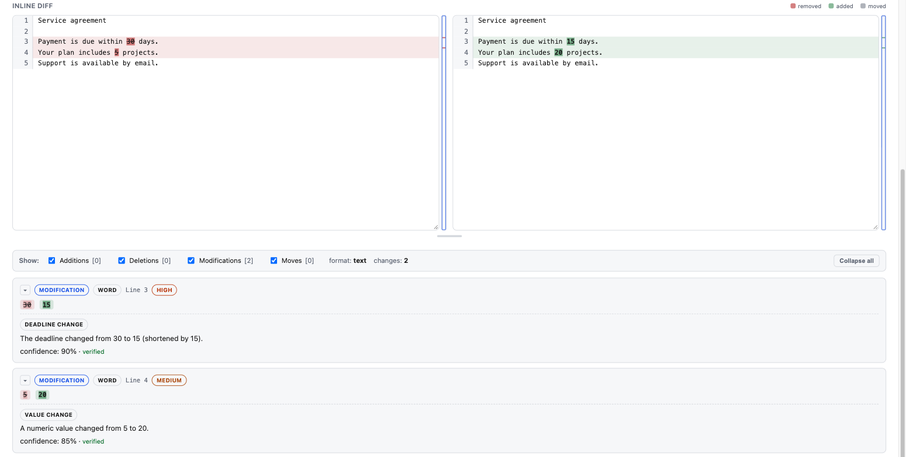
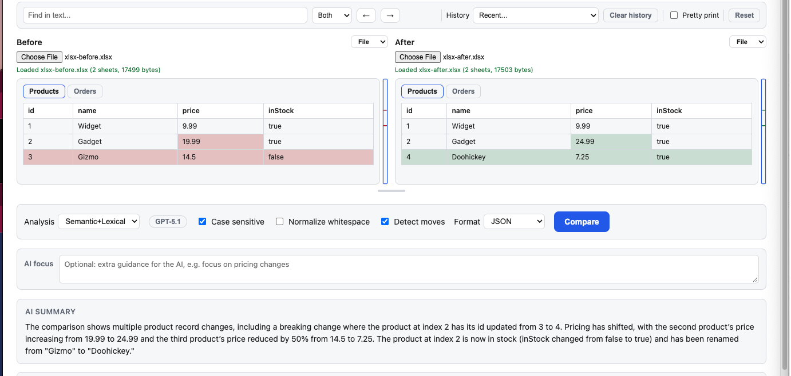
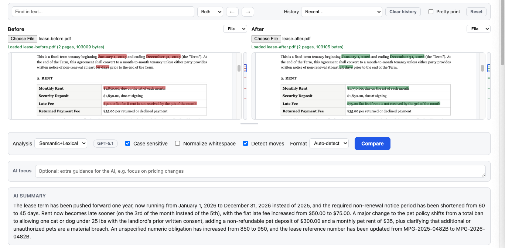
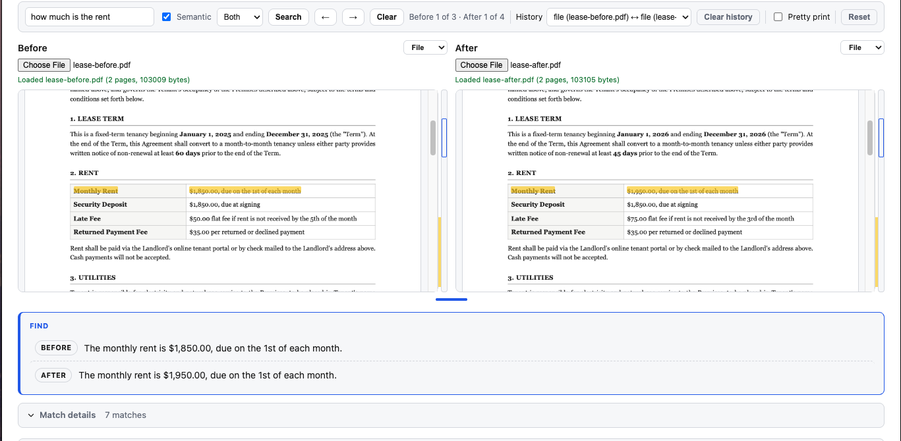

Every difference, accounted for.
Compare by character, word, sentence, line, or paragraph. Track additions, removals, and moved text without losing the context.
Precision first Open DiffFind
Open DiffFind
From a single word to a complex document, see every difference
clearly. Add AI insight to understand the meaning behind the changes.
Precise comparison at the core. AI when you need it.




SEE IT IN MOTION
A quick tour of comparing, exploring, and understanding changes.
CLARITY IN EVERY COMPARISON
Catch the details. See the context.
Move forward with a clearer picture.
Compare by character, word, sentence, line, or paragraph. Track additions, removals, and moved text without losing the context.
Precision firstOptional AI analysis explains what a change means. Cited facts are checked against your source documents, with verification status shown.
Insight with evidenceCompare the structure of JSON, YAML, XML, and CSV. Load local PDFs to see changes highlighted on the page, or Excel spreadsheets (XLS/XLSX) to compare every sheet at once.
Built for real documentsExplore: Text Compare Semantic Diff PDF Comparison Excel Comparison JSON Compare YAML Compare XML Compare CSV Compare URL Compare cURL Compare
FOR EVERY KIND OF USER
You don't need to be technical to see what changed.
DiffFind is built for however you work.
Compare contracts, invoices, budgets, and policy documents side by side, and see exactly which terms or figures changed before you sign off.
No training requiredCheck what changed between two drafts of a resume, email, or article without digging through manual redlines.
Just paste and compareFine-tune every comparison option by hand, or automate it entirely with cURL commands, a REST API, and agent-ready functions.
API includedFROM DIFFERENCE TO UNDERSTANDING
Paste text, choose a file, or load content from a URL or cURL command.
Choose your format and comparison options. Explore the differences side by side.
Add optional semantic analysis to explore meaning, severity, and verified details.
FOR THE WAY YOU BUILD
Bring precise comparison to your own tools with a REST API and agent-ready functions. Compare documents, find material changes, and detect breaking changes. Feed it a file, a URL, or a cURL command — no manual copy-pasting required.
Explore the OpenAPI specification// POST /v1/compare
{
"before": "Payment is due in 30 days.",
"after": "Payment is due in 15 days."
}THE DIFFERENCE IS IN THE DETAILS
Your documents have a story. Find what changed.